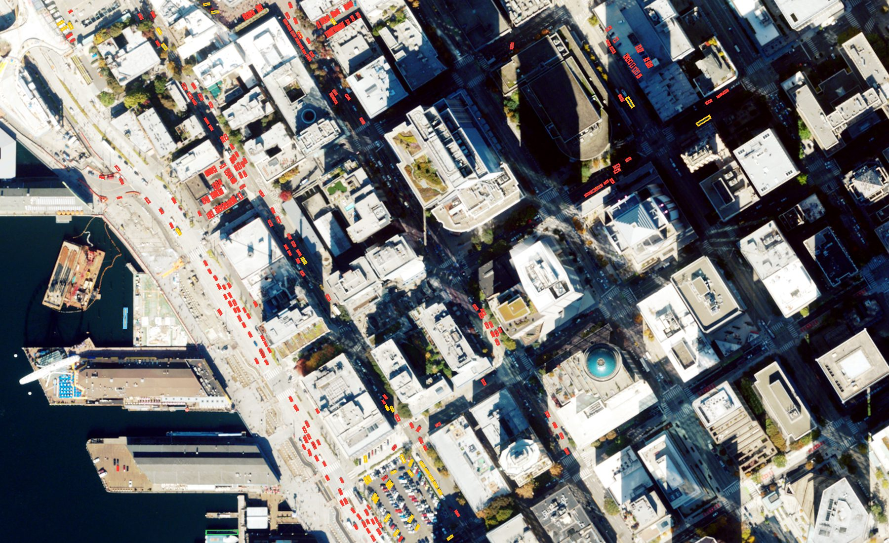
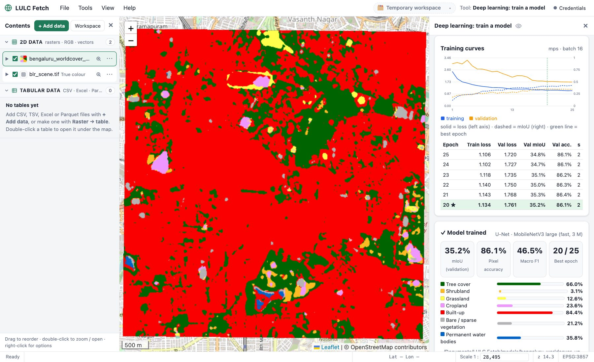
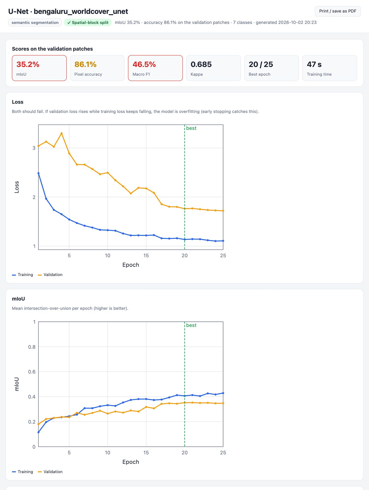

Free · Open source · Mac & Windows · Coming next: crop disease diagnosis & object detection
Land-cover maps from satellite images, on your own computer
Find Sentinel-2 and Landsat imagery, compute indices, train machine-learning and deep-learning models, classify images into land-use / land-cover maps and detect objects such as vehicles and ships, and diagnose crop diseases from leaf photos, with honest accuracy assessment. No coding, no cloud account, works offline.
One app for the whole workflow, laid out like a desktop GIS: layers on the left, map in the middle, tools on the right.
Get imagery
Search Sentinel-2 / Landsat for any area and date, cloud-free composites, or open your own .SAFE and GeoTIFF files.
Prepare
30 spectral & radar indices, PCA, and stacking of optical, radar and elevation layers into one image.
Label
Draw training polygons per class, or use a shapefile or an existing land-cover map as ground truth.
Train & validate
Random Forest, SVM, Maximum Likelihood, XGBoost, or deep learning (U-Net, DeepLabV3+, YOLO26…), with spatially honest accuracy.
Map & export
Classify whole images with a confidence layer or detect objects in them, then export as GeoTIFF, PNG, Shapefile or KML.
Features
Everything for land-use / land-cover work
Built on GDAL, scikit-learn, XGBoost, LightGBM and PyTorch, behind a friendly interface with hints on every option.
Crop disease diagnosis next release
The new Agri menu: photograph a leaf and get the crop and its disease, for 42 crops, with the top 3 diagnoses. Geotagged field photos become a disease map, and a guide of 9,000 expert answers explains symptoms and treatment. See it in action →
Detect object next release
Find vehicles, ships, planes, storage tanks, people and more in aerial, drone and very-high-resolution satellite images. Open-source pretrained YOLO26 (including a model trained on DOTA aerial images, with rotated boxes), Faster R-CNN, RetinaNet and Mask R-CNN, or SAM 2.1 to outline everything. Results are a vector layer with class, score and size.
Train detection model next release
Teach YOLO26 or YOLO11 your own objects from polygons or points you draw: boxes, outlines or rotated boxes. Tiles and zoom are handled for you, with live mAP curves, early stopping and an HTML report, and the model is ready to use in Detect object.
Train classify model & Classify image new
Semantic segmentation with U-Net, U-Net++, DeepLabV3+, PSPNet, FPN, SegFormer, FCN and LR-ASPP on MobileNetV2 / V3, ResNet or EfficientNet backbones, and (next release) YOLO26 semantic. Early stopping, live training curves, an HTML report, and seamless maps of whole scenes. Uses your Mac's GPU or an NVIDIA GPU.
Make training data new
Cut a large image and its ground truth (class raster or shapefile) into matching image / label patches. Patch size and overlap in metres, area of interest, and a classes.txt and dataset.json ready for training.
Band combinations & metadata new
Right-click any image to show colour infrared, SWIR · NIR · Red, agriculture, urban and more, or any three bands. See full metadata: coordinate system, extent and per-band statistics.
Find & download imagery
Sentinel-2 (10 m) and Landsat 8–9 (30 m) from open STAC catalogues: single dates, cloud-free median composites, WorldCover / Esri land cover, or original Copernicus and USGS products. Drag a .SAFE folder or zip onto the window to open it.
Indices, PCA & stacking
NDVI, EVI, SAVI, NDWI, NDBI, NBR, radar RVI and 20+ more, or your own formula. PCA, Kernel PCA, NMF, ICA. Stack optical, SAR and DEM layers.
Classical ML for rasters
Image plus ground truth to classified map in one run: SVM, Maximum Likelihood, Spectral Angle Mapper, Random Forest, k-NN and more. RGB, multispectral, hyperspectral and embeddings.
Supervised ML
16 models with preprocessing, hyperparameter tuning, a model leaderboard, spatially independent validation and a full HTML evaluation report.
Unsupervised ML
K-means, hierarchical, DBSCAN, HDBSCAN, spectral clustering and Gaussian mixture with automatic choice of k, plus t-SNE maps. Cluster images without labels.
Tables & attribute editing
View tables and attribute tables under the map, with a field calculator, area and length of shapes, Python (pandas) scripts and safe save-or-discard editing.
Training samples
Draw labelled polygons and points for each class on the map, with ready-made LULC class palettes. Import shapefiles, GeoJSON and KML.
Projects
Keep layers, results, tables and models in one project folder. It autosaves and reopens where you left off, and any result can be saved to your own folder.
Export anywhere
GeoTIFF, PNG (with world file), Shapefile, GeoJSON, KML, CSV and Parquet, for the whole layer or just your area of interest.
A closer look
Real results, not mock-ups
Every screenshot below is LULC Fetch working on real Sentinel-2 data of Bengaluru, India.
Classical ML for raster
One click from image to map
Pick an image and its ground truth (polygons, points or a land-cover raster), choose a model, and get a classified map with a confidence layer and a full accuracy report.
Detects RGB, multispectral, hyperspectral, SAR and pixel embeddings, and suggests suitable models
SVM (RBF / linear), Maximum Likelihood, Spectral Angle Mapper, Minimum Distance, Random Forest, XGBoost …
PCA band reduction for 100+ band hyperspectral data
Index analysis
30 indices, checked for you
Vegetation, water, built-up, burn, snow and radar indices in one click, or type your own formula. LULC Fetch reads band names, warns when a band is missing, and converts raw values to reflectance automatically.
Evaluation report
Know how good your model really is
Every trained model comes with a stand-alone HTML report you can share or print: overall accuracy, kappa, confusion matrices with producer's and user's accuracy, per-class scores, ROC and precision–recall curves, calibration and feature importance.
Unsupervised learning
Find natural groups, no labels needed
Six clustering methods with automatic choice of the number of clusters, quality scores, cluster profiles and comparison with known labels. Save a clustering as a model to make an unsupervised land-cover map.
Object detection · next release
Count every car, ship and plane in an aerial image
Detect object searches the whole image tile by tile and joins objects cut by tile edges back together. Here YOLO26, pretrained on the DOTA aerial dataset, finds 858 vehicles, ships and more in 4 seconds on a 0.6 m NAIP image of Seattle, with no training.
SAM 2.1: outline any detected object, or segment everything
Train detection model: your own classes from labelled polygons or points

Deep learning · new
Train a U-Net in minutes, and watch it learn
Turn your image and ground truth into patches with Make training data, pick an architecture and a backbone from the dropdown, and train. Loss and mIoU curves update after every epoch; early stopping keeps the best model, and Cancel never throws work away.
ImageNet-pretrained backbones adapted to any number of bands
Spatial-block validation, Dice / focal losses and class weights for rare classes

Deep-learning report
See what the network gets right, and wrong
Every model gets a one-file HTML report: mIoU, pixel accuracy, kappa, training curves with the best epoch, confusion matrices, IoU and F1 per class, and example patches shown as image, ground truth and prediction side by side.

Tables & editing
Edit tables like in a GIS, or with Python
Open any table or attribute table under the map. Add fields with the calculator (including polygon area and perimeter), edit cells, or run pandas code. Changes stay in a working copy until you choose to save or discard them.
Agriculture · new Agri menu · next release
Which disease does this crop have? Ask a leaf photo.
Photograph a leaf in the field. LULC Fetch recognises the crop, finds the disease with a deep-learning model trained for that crop, and tells you how to manage it. Photos taken with location on become a disease map of your fields, ready to compare with NDVI from satellite images.
42crops diagnosed, from apple and mango to rice, maize, tomato and sugarcane
91–100%disease-model accuracy on held-out test photos, per crop
99.8%crop recognised correctly by the crop detector (2,621 test photos)
9,076expert questions & answers on symptoms, treatment and pests
Real leaf photos from the public PlantVillage dataset (CC0), diagnosed by LULC Fetch with the crop detected automatically. Confidence is the disease model's.
Add photos
Single leaf photos, or a whole folder from a field survey (up to 5,000).
Photo check
Too dark, blank, blurry or not a leaf? You get "retake photo" with a tip, never a guess.
Crop
Two crop detectors recognise 42 crops, or you choose the crop yourself.
Disease
That crop's ConvNeXt model gives the top 3 diseases with confidence.
Map & act
A results table, a disease map from GPS photos, and the guide's advice for each disease.
Diagnose crop disease
A disease map from a field walk
Add the photos from your phone and click Diagnose. Every photo with a GPS position becomes a point: red diseased, green healthy, orange retake. The summary counts each crop and disease, and the results table (one row per photo, with the top 3 diagnoses) opens under the map.
15 photos in under 6 seconds on a MacBook (Apple GPU)
Export the points as Shapefile, GeoJSON or KML, or lay them over NDVI
Every photo explained
Top 3 diagnoses, and how sure the model is
Each photo gets a card: the crop and how sure the detector is, the diagnosis with confidence bars for the three most likely diseases, and a link to read about it. Photos the models can't trust are refused with a tip on how to retake them, as in the farmer app the models come from.
Crop disease guide
Symptoms, treatment and spray schedules, offline
About 9,000 questions and answers by agriculture experts, from extension booklets and datasets. Pick a crop and a disease, or search with your own words (yellow leaves, fruit drop, spray schedule). Answers are grouped into symptoms, management, pests and growing practices, with the growth stage they apply to.
The models come from the Multi-Crop Disease Decision Support System (ConvNeXt-Small, trained on public datasets such as PlantVillage and LeafNet and on field photos). They are on Hugging Face and download by themselves the first time a crop is diagnosed (about 95 MB per crop), and each crop's model is also its own repository in this collection; the questions and answers are the open dataset crop-disease-qa. Test photos come from the same datasets the models learned from, so real field photos can score lower. Photo diagnosis supports, but doesn't replace, a local agriculture expert.
Honest accuracy
Accuracy you can trust
Neighbouring pixels look almost identical. When test pixels are picked at random, they are near-copies of the training pixels, and the accuracy looks far better than the map really is. LULC Fetch holds out whole polygons or spatial blocks for testing, and tells you which method it used.
79.5%Random pixel test: the usual, optimistic number
53.9%By-polygon test: the same model, measured honestly
Same Random Forest, same data. Example from testing LULC Fetch.
Any number of bands
Works with the data you have
Every model accepts any number of channels, from 3-band photos to hyperspectral cubes and learned embeddings.
RGBDrone and aerial photos, georeferenced JPG / PNG
MultispectralSentinel-2, Landsat 8–9 and other 4–30 band sensors
Hyperspectral100+ narrow bands, with PCA band reduction
Everything runs on your own machine: no upload, no cloud processing, no account needed for analysis.
Works offline
All analysis, machine learning and editing work without internet. Internet is only used to find and download imagery, for basemaps and for address search.
Free & open
Open source under the Apache 2.0 licence. Inspect it, improve it, and use it in research, teaching or projects.
Download
Get LULC Fetch, free
Ready-to-run apps: Python and all libraries are included, so there's nothing else to install. Version 0.0.1 beta. The deep-learning tools install their PyTorch add-on from inside the app the first time you open them. Object detection (Detect object, Train detection model) and the Agri menu (crop disease diagnosis and guide) arrive in the next release; to try them now, run LULC Fetch from source (see GitHub).
Mac
Apple Silicon (M1–M5) · macOS 14 Sonoma or newer · about 175 MB
Yes. It's free and open source under the Apache 2.0 licence. The imagery sources it uses (Copernicus, USGS, Earth Search, Microsoft Planetary Computer) are free too.
Do I need to know programming?
No. Everything is done with menus, forms and the map, with a hint (ⓘ) on every option. If you do know Python, you can also edit tables with pandas inside the app.
Does it need internet?
Only to search and download imagery, for background maps and for address search. Opening your own files, indices, PCA, stacking, every machine-learning tool, editing and export work offline.
Do I need a Copernicus or USGS account?
No account is needed to search and download Sentinel-2 / Landsat imagery and composites. Accounts are only needed for original full products (.SAFE, Landsat scenes). LULC Fetch keeps those credentials in your computer's secure keychain.
Why does my computer warn me the first time I open it?
The app isn't signed with a paid Apple or Microsoft developer certificate yet, so macOS and Windows ask you to confirm once (Open Anyway / Run anyway). The full source code is public on GitHub.
Which machine-learning models are included?
Random Forest, Extra Trees, Decision Tree, XGBoost, LightGBM, Histogram Gradient Boosting, SVM (RBF, linear, polynomial), Logistic Regression, SGD, Naive Bayes, Maximum Likelihood, Linear Discriminant, Minimum Distance, Spectral Angle Mapper, k-Nearest Neighbours and a neural network (MLP); for clustering K-means, hierarchical, DBSCAN, HDBSCAN, spectral and Gaussian mixture, plus t-SNE.
Can it do deep learning?
Yes. Make training data cuts your image and ground truth into patches, Train classify model trains U-Net, DeepLabV3+, PSPNet, SegFormer, FCN, YOLO26 semantic and more, and Classify image maps whole scenes. Detect object finds vehicles, ships, planes, storage tanks, people and more in high-resolution aerial or drone images with open-source pretrained models (YOLO26, including an aerial model trained on DOTA, Faster R-CNN, RetinaNet, Mask R-CNN, and SAM 2.1 segment-everything), and Train detection model teaches YOLO your own objects from labelled polygons or points (both in the next release; available now when running from source). The first time, the app offers to install the free PyTorch add-on (about 0.8 GB on Mac; on Windows 1.1 GB for CPU only or 3.5 GB with NVIDIA GPU support); YOLO and SAM need a second, smaller add-on (ultralytics, AGPL-3.0). Training uses the Apple GPU on Macs and an NVIDIA GPU on Windows if there is one.
Can it tell which disease my crop has?
Yes, from the next release. Agri ▸ Diagnose crop disease recognises the crop on a leaf photo (42 crops, from apple and mango to rice, maize, tomato and sugarcane) and gives the top 3 diseases with confidence, using one ConvNeXt model per crop. Unclear photos get "retake" instead of a guess, and photos with GPS become a disease map. Agri ▸ Crop disease guide has about 9,000 expert answers on symptoms, treatment and pests, and works offline. The models download from Hugging Face the first time each crop is needed (about 95 MB per crop); after that it works offline.
Where are my files stored?
In Documents ▸ LULC Fetch by default, or in a project folder you choose. You can save any result to another folder as well.